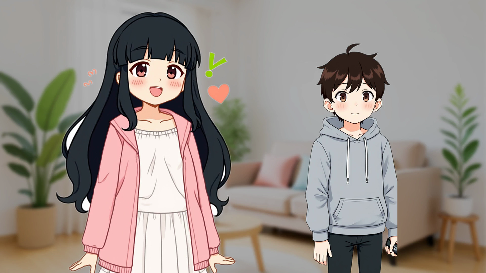
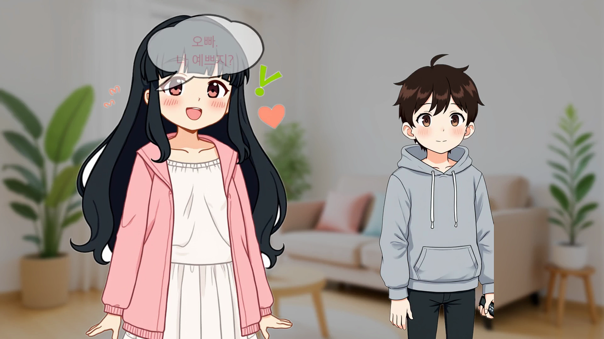
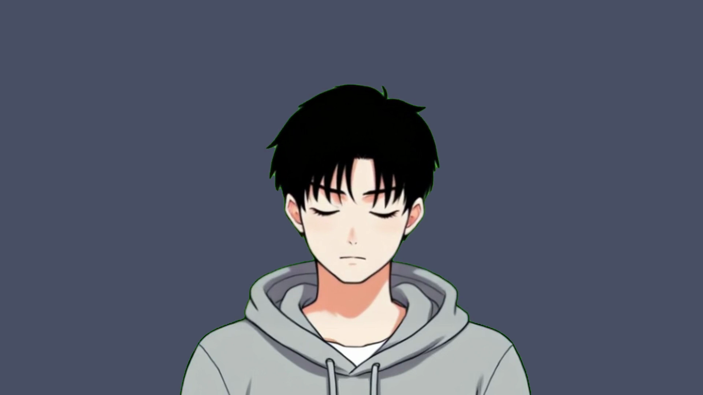
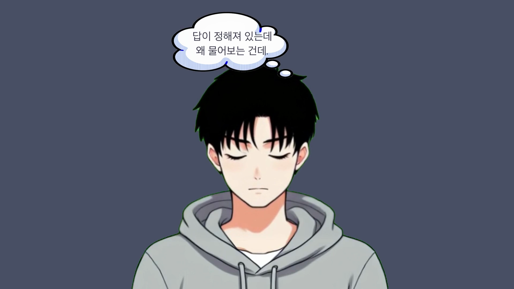
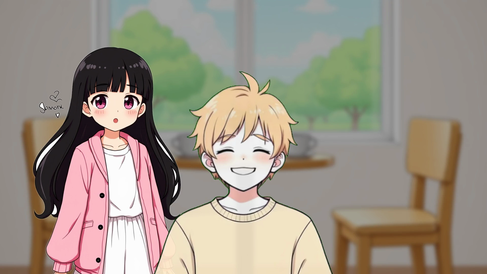
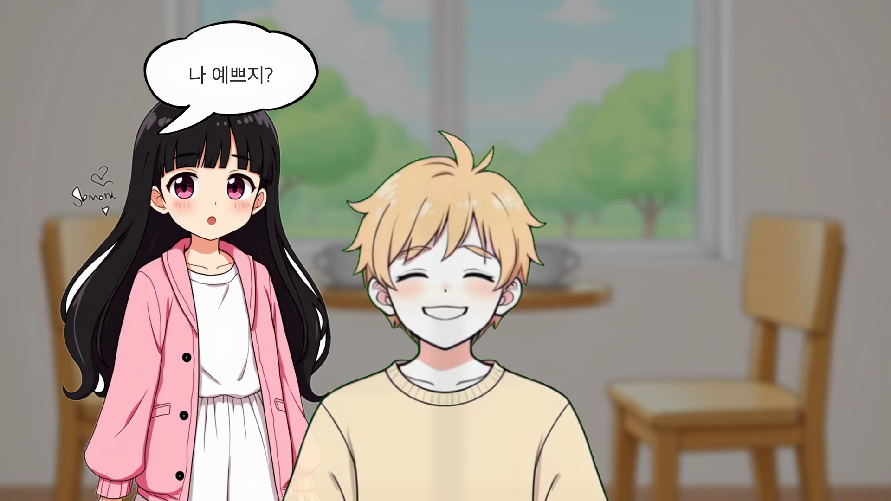
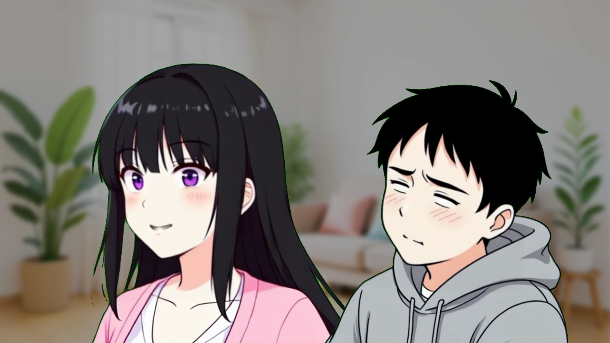
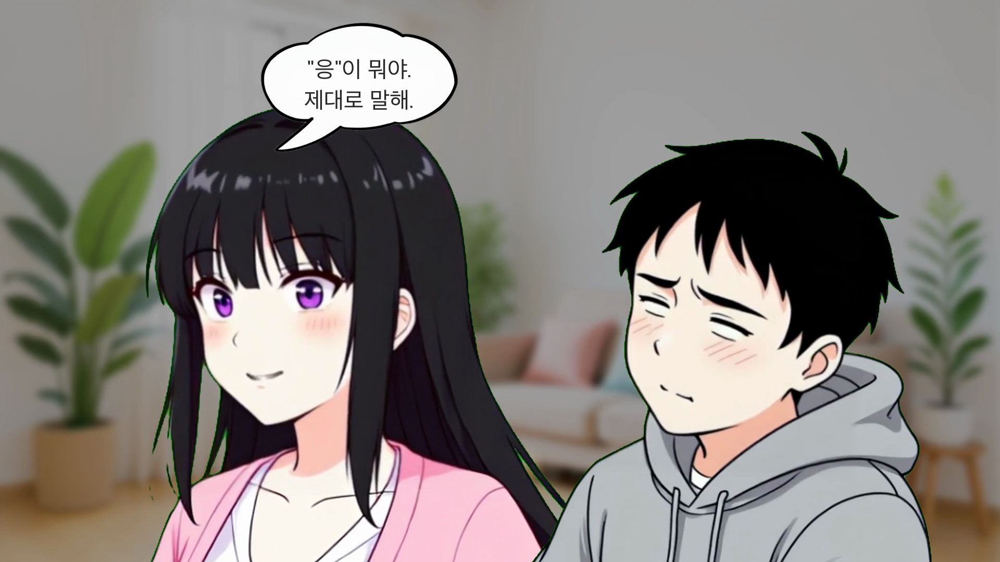

| 항목 | 기준 | 측정값 | 판정 |
|---|---|---|---|
| 해상도 | 1920×1080 | 1920×1080 | PASS |
| 프레임레이트 | 30fps | 30/1 | PASS |
| 비디오 코덱 | H.264 | h264 | PASS |
| 오디오 코덱 | AAC | aac / 24000Hz / mono | PASS |
| 스트림 오류 | 0건 | 0건 | PASS |
| 파일 크기 | 25~40MB (10분 1080p) | 31MB | PASS |
| 항목 | 기준 | 측정값 | 판정 |
|---|---|---|---|
| 메인 클립 | 16개 | 16개 | PASS |
| 비트 클립 | 16개 | 16개 | PASS |
| 클립 합산 vs 롱폼 | ≤1.0s 차이 | 664.7s vs 665.1s (0.4s) | PASS |
| 빌드 경고 | 0건 | 0건 | PASS |
| # | 클립 ID | Duration | 비트 |
|---|---|---|---|
| 01 | 00_prologue | 22.6s | 0.8s |
| 02 | 01_siblings | 50.3s | 0.8s |
| 03 | 02_baby | 33.0s | 0.8s |
| 04 | 03_validation | 27.8s | 0.8s |
| 05 | 04_transition | 16.2s | 1.3s |
| 06 | 05_minjun_pov | 36.9s | 0.8s |
| 07 | 06_coerced | 23.3s | 0.8s |
| 08 | 07_vending | 28.0s | 0.8s |
| 09 | 08_dissonance_boundary | 60.7s | 1.3s |
| 10 | 09_jiwoo_intro | 49.4s | 0.8s |
| 11 | 10_rationalize | 37.8s | 0.8s |
| 12 | 11_helplessness | 65.1s | 1.3s |
| 13 | 12_subin_reversal | 45.8s | 1.8s |
| 14 | 13_gaslighting | 59.2s | 0.8s |
| 15 | 14_structure | 47.9s | 1.3s |
| 16 | 15_epilogue | 43.4s | 2.3s |
build_video_v3.py 멀티세그먼트 경로에 build_bubble_overlay_video() 호출 자체가 누락된 코드 버그.01_siblings의 S-04 구간. 이전 빌드에서는 코드 버그로 말풍선이 완전히 누락. 수정 후 수빈의 대사 말풍선이 정상 렌더링됩니다.

05_minjun_pov의 S-10 구간. 민준의 내면 독백 생각풍선이 이전에는 렌더링되지 않았으나, 수정 후 정상 표시됩니다.

11_helplessness의 S-19. 수빈의 반복 질문 "나 예쁘지?" 말풍선이 새로 추가되어 학습된 무력감 패턴을 시각적으로 강화합니다.



| 항목 | 결과 | 판정 |
|---|---|---|
| 각본 26씬 × 16클립 매핑 | 전수 매핑 완료, 누락 없음 | PASS |
| 감정 곡선 5단계 배치 | 균열→자각→폭풍→항복→거울 순서 확인 | PASS |
| 킬링 라인 전달 | "나 예쁘지?", "이건 질문이 아닙니다", "대답해주기 싫다" 등 전수 확인 | PASS |
| 프롤로그 훅 | S-00 블랙 + S-01 수빈 — 5~15초 몰입 유도 | PASS |
| 에필로그 bookend | S-23 세 캐릭터 + S-24 빈 의자 — 프롤로그 연결 | PASS |
| 심리학 용어 12건 커버리지 | 확인추구행동, 자율성침해, 강요된동의, 도구적관계, 인지부조화, 심리적경계, 관계유지동기, 자기합리화, 학습된무력감, 나르시시즘적공급, 가스라이팅(반박), 구조정리 — 12/12 | PASS |
| 버전 | 파일 | 길이 | 크기 |
|---|---|---|---|
| v3 이전 (baseline) | 20260416_184151_EP01_v3_lp_bubble.mp4 | 662.3s | 30MB |
| v3 최신 (current) | 20260416_195444_EP01_v3_lp_bubble.mp4 | 665.1s | 31MB |
| # | 항목 | 심각도 | 상세 |
|---|---|---|---|
| 1 | TRAP-034: 멀티세그먼트 오버레이 | P0 | 8/16 클립의 모든 오버레이가 렌더링됨 (이전: 전부 누락) |
| 2 | 타이틀 카드(S-02) 노출 증가 | P2 | ratio 0.08→0.13 (~2.9초, 읽기 가능) |
| 3 | S-04/S-05 씬 전환 타이밍 | P2 | "민준이의 머릿속" 내레이션에 맞춰 전환 |
| 4 | "응/응이뭐야" 대사 간격 | P1 | TTS 분할 + 0.4초 무음 삽입, 화자 구분 개선 |
| 5 | S-19 반복 대사 말풍선 | P1 | 수빈/지우 말풍선 4개 추가 (학습된 무력감 시각화) |
| 6 | S-15 "2막B" 구조 라벨 | P2 | Type E 라벨 추가 |
0x30C010:0.12:0.02 파라미터 유지발견 없음
| 항목 | 변화 | 원인 |
|---|---|---|
| 총 재생 시간 | 662.3s → 665.1s (+2.8s) | TTS 분할 재생성으로 대사 간격 추가 |
| 빌드 시간 | 소폭 증가 | 멀티세그먼트 오버레이 렌더링 추가 (8클립) |
| # | 이슈 | 심각도 | 대응 계획 |
|---|---|---|---|
| 1 | Pillow 텍스트 렌더링 미세 열화 | P3 | Typecast TTS 단계에서 최종 조정 |
| 2 | S-12 "칭찬 버튼" 텍스트 보완 | P3 | 텍스트 오버레이로 보완 예정 |
| 3 | BGM/SFX 미적용 | — | Phase 8g에서 처리 |
| TRAP | 제목 | 상태 |
|---|---|---|
| TRAP-032 | LP overlay shortest=1 조기 종료 | 해결 |
| TRAP-033 | 멀티세그 concat -map 누락 | 해결 |
| TRAP-034 | 멀티세그먼트 오버레이 렌더링 누락 | 해결 |